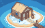
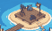
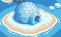

Rota Abrir as portas
Para quem ainda não aparece na internet: o site, o Google e o WhatsApp prontos de uma vez.

Linu Sites
Digital Linu
Linu Seguro
- Site de apresentaçãoR$ 1.200Linu Sites
- Plano No ar (servidor, HTTPS, cópias)R$ 60 por mêsLinu Sites
- Google Meu NegócioR$ 350Digital Linu
- Organização do perfilR$ 300Digital Linu
- WhatsApp e contas protegidosR$ 250Linu Seguro
a partir de R$ 2.100 + R$ 60 por mês
Pedir esta rota